CSS Selectors#
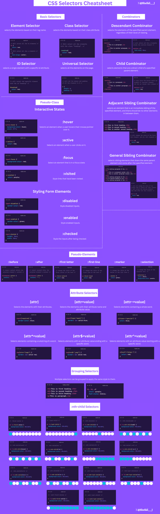
We have introduced simple CSS selectors in the first chapter, in this chapter, we will introduce the rest four type of selectors
Combinator selectors(select elements based on a specific relationship between them)Pseudo-class selectors(select elements based on a certain state)Pseudo-elements selectors(select and style a part of an element)Attribute selectors(select elements based on an attribute or attribute value)
nth-child Selectors#
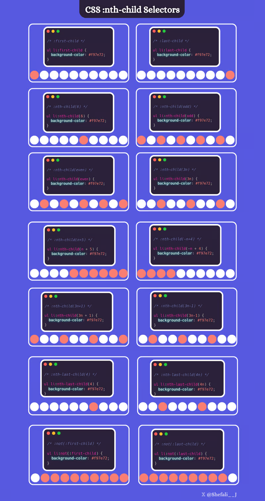
CSS Combinators#
A CSS selector can contain more than one simple selector. Between the simple selectors, we can include a combinator.
There are four different combinators in CSS:
descendant selector (space)
child selector (
>)adjacent sibling selector (
+)general sibling selector (
~)Selector
Example
Example description
element elementdiv pSelects all
<p>elements inside<div>elementselement > elementdiv > pSelects all
<p>elements where the parent is a<div>elementelement + elementdiv + pSelects the first
<p>element that is placed immediately after<div>elementselement1 ~ element2p ~ ulSelects every
<ul>element that is preceded by a<p>element
Descendant Selector#
The descendant selector matches all elements that are descendants of a specified element.
The following example selects all
<p>elements inside<div>elements:Descendant Selector: Selects all elements that are descendants (children, grandchildren, etc.) of a specified element.div p { background-color: yellow; }
Child Selector (>)#
The child selector selects all elements that are the children of a specified element.
The following example selects all
<p>elements that are children of aelement:Child Selector (
>): Selects only the direct children of a specified element.div > p{ background-color: yellow; }
Adjacent Sibling Selector (
+)#The
adjacent sibling selectoris used to select an element that is directly after another specific element.Sibling elementsmust have the same parent element, andadjacentmeans immediately following.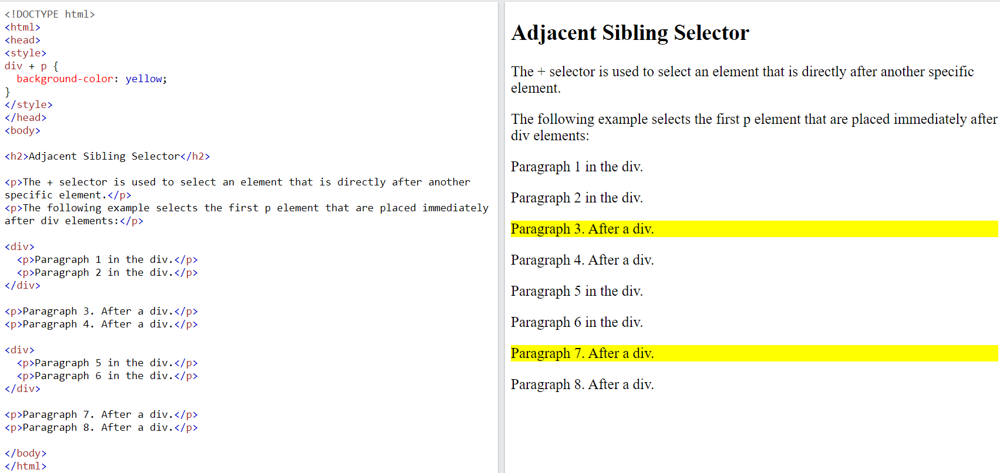
The following example selects the first
<p>element that are placed immediately after<div>elements:div + p { background-color: yellow; }
General Sibling Selector (
~)#The
general sibling selectorselects all elements that are next siblings of a specified element.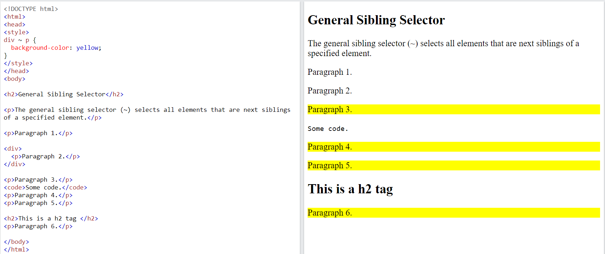
The following example selects all
<p>elements that are next siblings of<div>elements:div ~ p { background-color: yellow; }
CSS Pseudo-classes#
A
pseudo-classis used to define a special state of an element.For example, it can be used to:
Style an element when a user
mouses overitStyle
visitedand unvisitedlinksdifferentlyStyle an element when it
gets focus
Syntax
selector:pseudo-class { property: value; }
Anchor Pseudo-classes#
Linkscan be displayed in different ways:/* unvisited link */ a:link { color: #FF0000; } /* visited link */ a:visited { color: #00FF00; } /* mouse over link */ a:hover { color: #FF00FF; } /* selected link */ a:active { color: #0000FF; }
Hover#
Pseudo-classescan be combined with HTML classes:When you hover over the
linkin the example, it will change color:a.highlight:hover { color: #ff0000; }
An example of using the
:hoverpseudo-class on a<div>element to implement a simple tooltip Hover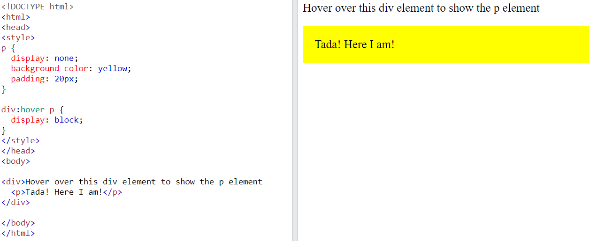
first-child Pseudo-class#
The
:first-childpseudo-class matches a specified element that is the first child of another element.In the following example, the
selectormatches any<p>element that is the first child of any element:p:first-child { color: blue; }
In the following example, the selector matches the first
<i>element in all<p>elements:p i:first-child { color: blue; }
In the following example, the selector matches all
<i>elements in<p>elements that are the first child of another element:p:first-child i { color: blue; }
The
:langPseudo-class#The
:langpseudo-class allows you to define special rules for different languages.In the example below,
:langdefines the quotation marks for<q>elements with lang=”no”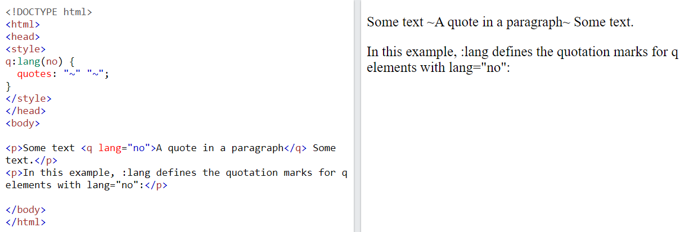
All CSS Pseudo Classes#
Selector
Example
Example description
:activea:activeSelects the active link
:checkedinput:checkedSelects every checked
<input>element:disabledinput:disabledSelects every disabled
<input>element:emptyp:emptySelects every
<p>element that has no children:enabledinput:enabledSelects every enabled
<input>element:first-childp:first-childSelects every
<p>element that is the first child of its parent:first-of-typep:first-of-typeSelects every
<p>element that is the first<p>element of its parent:focusinput:focusSelects the
<input>element that has focus:hovera:hoverSelects links on mouse over
:in-rangeinput:in-rangeSelects
<input>elements with a value within a specified range:invalidinput:invalidSelects all
<input>elements with an invalid value:lang(language)p:lang(it)Selects every
<p>element with a lang attribute value starting with “it”:last-childp:last-childSelects every
<p>element that is the last child of its parent:last-of-typep:last-of-typeSelects every
<p>element that is the last<p>element of its parent:linka:linkSelects all unvisited links
:not(selector):not(p)Selects every element that is not a
<p>element:nth-child(n)p:nth-child(2)Selects every
<p>element that is the second child of its parent:nth-last-child(n)p:nth-last-child(2)Selects every
<p>element that is the second child of its parent, counting from the last child:nth-last-of-type(n)p:nth-last-of-type(2)Selects every
<p>element that is the second<p>element of its parent, counting from the last child:nth-of-type(n)p:nth-of-type(2)Selects every
<p>element that is the second<p>element of its parent:only-of-typep:only-of-typeSelects every
<p>element that is the only<p>element of its parent:only-childp:only-childSelects every
<p>element that is the only child of its parent:optionalinput:optionalSelects
<input>elements with no “required” attribute:out-of-rangeinput:out-of-rangeSelects
<input>elements with a value outside a specified range:read-onlyinput:read-onlySelects
<input>elements with a “readonly” attribute specified:read-writeinput:read-writeSelects
<input>elements with no “readonly” attribute:requiredinput:requiredSelects
<input>elements with a “required” attribute specified:root:rootSelects the document’s root element
:target#news:targetSelects the current active
#newselement (clicked on a URL containing that anchor name):validinput:validSelects all
<input>elements with a valid value:visiteda:visitedSelects all visited links
CSS Pseudo-elements#
A CSS
pseudo-elementis used to style specified parts of an element.For example, it can be used to:
Style the first letter, or line, of an element
Insert content before, or after, the content of an element
Syntax
selector::pseudo-element { property: value; }
All CSS Pseudo Elements#
Selector
Example
Example description
::afterp::afterInsert content after every
<p>element::beforep::beforeInsert content before every
<p>element::first-letterp::first-letterSelects the first letter of every
<p>element::first-linep::first-lineSelects the first line of every
<p>element::marker::markerSelects the markers of list items
::selectionp::selectionSelects the portion of an element that is selected by a user
::first-linePseudo-element#The
::first-linepseudo-element is used to add a special style to the first line of a text.The following example formats the first line of the text in all
<p>elements:The
::first-linepseudo-element can only be applied toblock-level elements.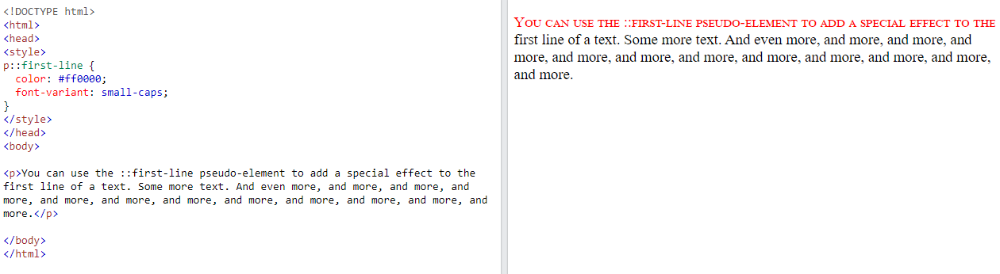
CSS Attribute Selectors#
The
[attribute] selectoris used to select elements with a specified attribute.Selector
Example
Example description
[attribute][target]Selects all elements with a target attribute
[attribute=value][target="_blank"]Selects all elements with target=”_blank”
[attribute~=value][title~="flower"]Selects all elements with a title attribute that contains a space-separated list of words, one of which is “flower”
[attribute^=value]a[href^="https"]Selects all
<a>elements with a href attribute value starting with “https”[attribute$=value]a[href$=".pdf"]Selects all
<a>elements with a href attribute value ending with “.pdf”[attribute*=value]a[href*="w3schools"]Selects all
<a>elements with a href attribute value containing the substring “w3schools”The following example selects all
<a>elements with a target attribute: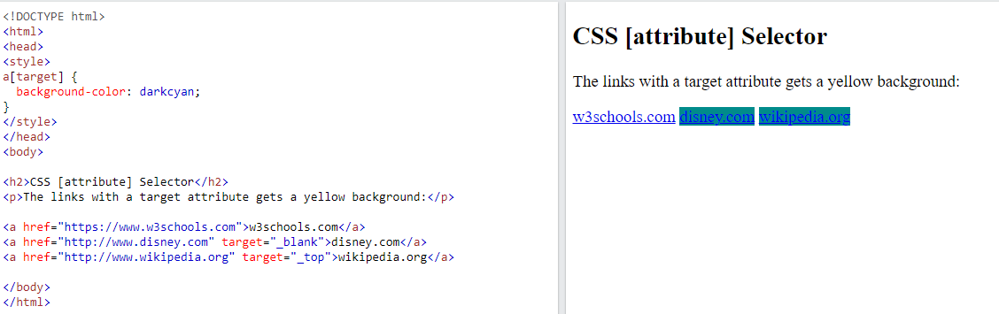
CSS [attribute=”value”] Selector#
The
[attribute="value"]selector is used to select elements with a specified attribute and value.The following example selects all
<a>elements with atarget="_blank"attribute:a[target="_blank"] { background-color: yellow; }
CSS [attribute~=”value”] Selector#
The
[attribute~="value"]selector is used to select elements with an attribute value containing a specified word.The following example selects all elements with a title attribute that contains a space-separated list of words, one of which is “flower”:
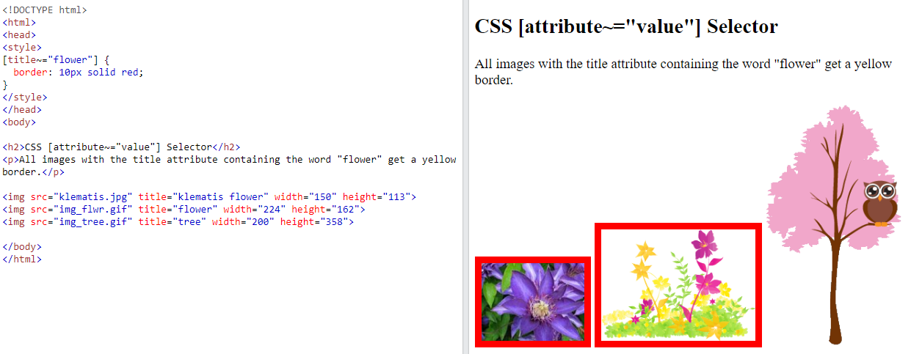
Hands-on Task#
Objective#
Gain practical experience using various
CSS selectorsandpropertiesto style web page elements.Learn how to apply styles using
element,class, andID selectors, as well ascombinatorandgroupselectors.Explore
pseudo-classesandpseudo-elementsto enhance user interactions and element styling.Task Details#
Set Up the
HTMLStructure<!DOCTYPE html> <html lang="en"> <head> <meta charset="UTF-8"> <meta name="viewport" content="width=device-width, initial-scale=1.0"> <title>CSS Selectors Task</title> <link rel="stylesheet" href="styles.css"> </head> <body> <header id="main-header"> <h1 class="title">Welcome to My Webpage</h1> <nav> <ul class="nav-list"> <li><a href="#">Home</a></li> <li><a href="#">About</a></li> <li><a href="#">Services</a></li> <li><a href="#">Contact</a></li> </ul> </nav> </header> <main> <section class="intro"> <h2>Introduction</h2> <p>This is a brief introduction to my webpage. Here you can find various information about different topics.</p> </section> <section class="content"> <h2>Content Section</h2> <p>This is the main content of the page. Feel free to explore and learn more about what we offer.</p> </section> <section class="footer"> <h2>Footer Section</h2> <p>© 2024 My Webpage. All rights reserved.</p> </section> </main> </body> </html>
Use basic selector to render page like following
Hint
color: darkblue
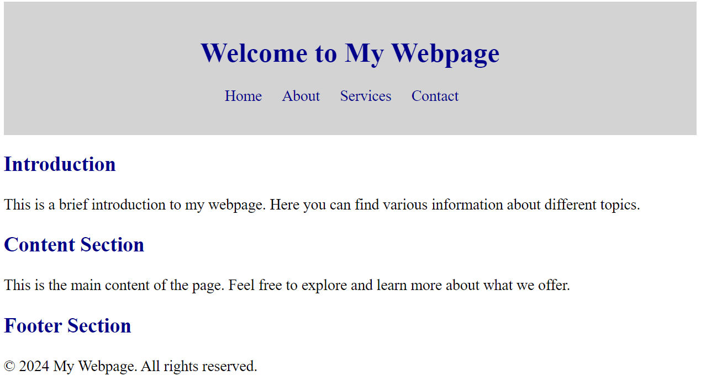
Use Combinator and Group Selectors to achieve following layout
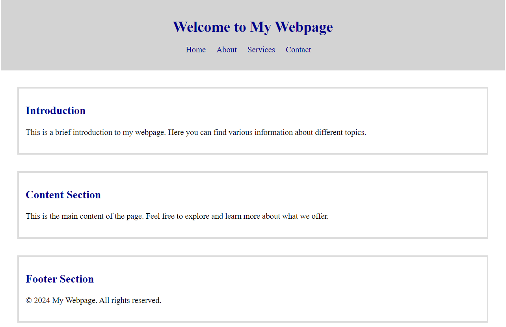
Use Combinator and Group Selectors:#
Apply styles using combinator selectors (descendant, child, sibling) and group selectors.
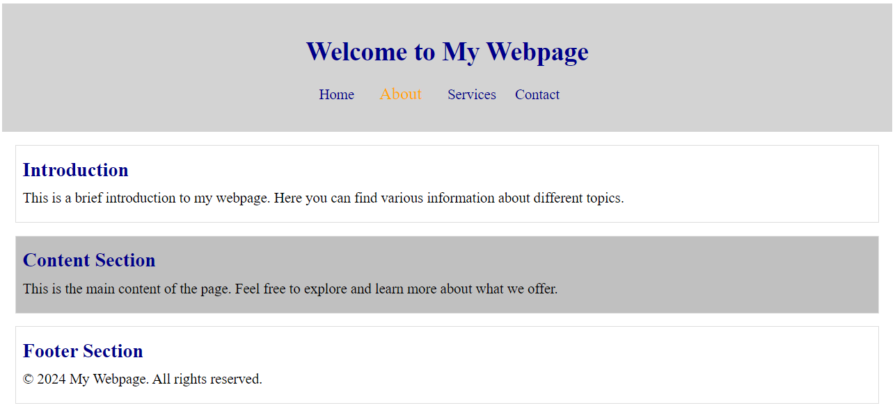
Sample Script:#
/* Element selectors */ body { font-family:'Times New Roman', Times, serif; margin: 0; padding: 10px; } h1, h2 { color: darkblue; } p { font-size: 1.1rem; line-height: 1.5; } /* ID selector */ #main-header{ background-color: lightgray; } /* ID selector */ #main-header { background-color: lightgray; padding: 1.2rem; text-align: center; } /* Class selector */ .nav-list { list-style-type: none; padding: 0; } .nav-list li { display: inline; margin-right: 1.2rem; } .nav-list li a { text-decoration: none; color: darkblue; font-size: 1.1rem; } /* Descendant selector */ header nav ul li a:hover { color: orange; font-size: 1.3rem; padding: 10px; } /* Child selector */ main > section { margin: 20px; padding: 10px; border: 1px solid #ddd; } /* Adjacent sibling selector */ .intro + .content { background-color: #c0c0c0; } /* Group selector */ h2, p { margin: 10px 0; } /* Pseudo-classes */ a:hover { color: green; } a:active { color: darkred; } /* Pseudo-elements */ .intro::before { content: "★"; color: gold; margin-right: 5px; } .content::after { content: "✿"; color: pink; margin-left: 5px; }